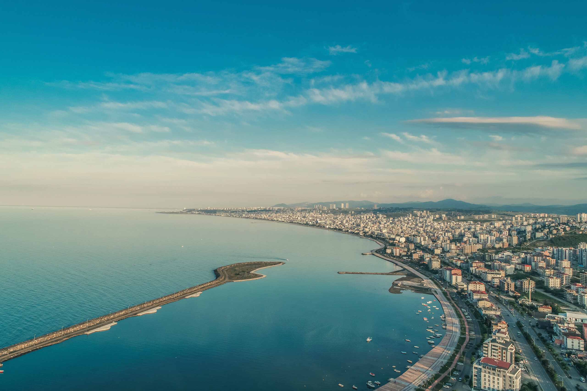

iklim ve bitki örtüsü
Samsun iklimi şehrin konumu ve coğrafyası dolayısıyla sahil ve iç kesimlerde değişiklik göstermektedir.
Köppen iklim sınıflandırmasına göre "Cfa" türünde ılıman dönencealtı iklimi görülen ilin tipik Karadeniz ikliminin yaşandığı sahil şeridinde yaz ayları sıcak ve nemli,
kışlar ise ılık-serin geçmekte; buna karşın Akdağ ve Canik Dağlarının etkisiyle karasal iklime sahip olan iç kesimlerde kışlar soğuk, yağmurlu ve kar yağışlı, yazlar ise serin geçmektedir.
Meteoroloji Genel Müdürlüğünün 1929-2018 yılları arasındaki ölçüm değerlerine göre
Samsun'un yıllık sıcaklık ortalaması 14.5 °C olup ölçülen en yüksek sıcaklık 15 Ağustos 1938 günü kayda geçen 39.0 °C, en düşük sıcaklık ise 9 Şubat 1929 günü kayda geçen -9.8 °C'dir.